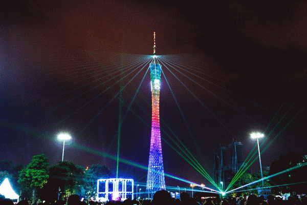
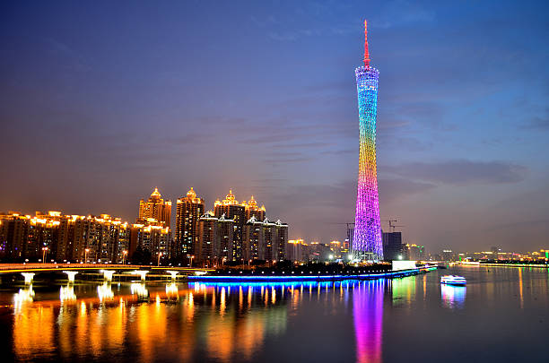
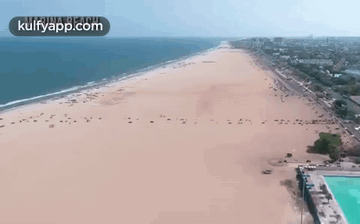
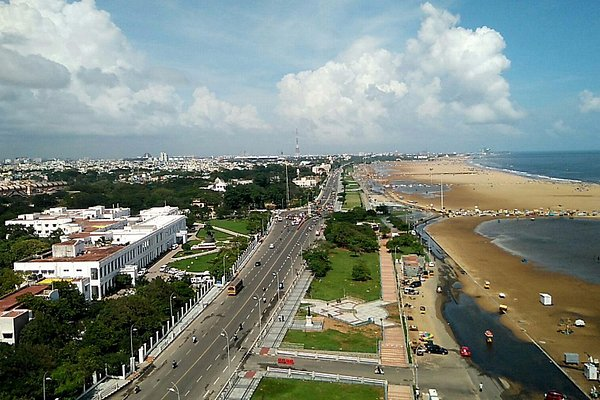
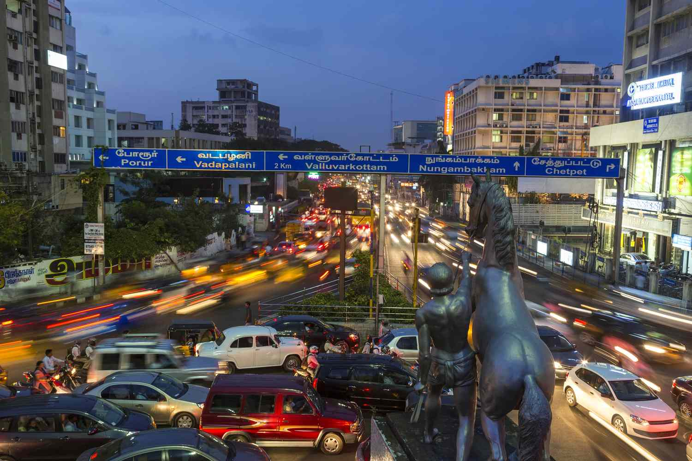
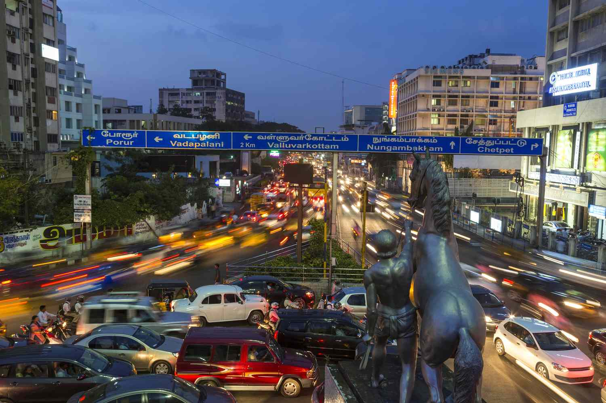

Yellowstone


Geographical Location: North America
Yellowstone is the first national park in the United States. It covers over 2.2 million acres and provides an opportunity to see wildlife and explore geothermal areas. In fact, Yellowstone contains about half the world's active geysers.
These unique opportunities also bring out a lot of bad decisions among the tourists. Every year visitors injure themselves or the wildlife by getting close to the animals. You can see examples of people making bad decisions by visiting Yellowstone National Park: Invasion of the Idiots, Tourons of Yellowstone, or Cowboy State Daily.
Photo Gallery


Dublin, Ireland

Geographical Location: Western Europe
Dublin City is the capital city of the Republic of Ireland and is located in the east of Ireland. Dublin was originally a Viking settlement called Dubh Linn, which translates to black pool. Dublin has always been a historically significant city in Irish history, from being the main city from which the British ruled over Ireland for 800 years to then being the setting of the 1916 Easter Rising and Irish War of Independence.
Today Dublin is a developed city boasting one of the strongest tech sectors in Europe and a booming tourism industry. Dublin is renowned for its sites such as the GPO, Croke Park, O'Connell Street, Temple Bar, and Saint James Gate, which is where Guinness is brewed. Dublin is also surrounded by great coastal towns such as Dun Laoghaire, Howth, and Skerries.
Photo Gallery


San Francisco


Geographical Location: North America
San Francisco is a great location to visit with many landmarks, including the Golden Gate Bridge and Alcatraz. Located in Northern California, San Francisco is one of the most populated cities in California with a population of 815,000. The city is also a center of culture and industry. San Francisco is home to a thriving tech industry.
San Francisco has many trails and parks where you can hike or enjoy a walk. The Presidio is a large park with hiking trails and paths surrounding the Golden Gate Bridge area. One can see picturesque views of the bay and its wildlife.
Photo Gallery


Guangzhou, China
 Geographical Location: Asia
Guangzhou is the capital and largest city of Guangdong province in southern China. Located on the Pearl River about 120 km (75 mi) north-northwest of Hong Kong and 145 km (90 mi) north of Macau, Guangzhou has a history of over 2,200 years and was a major terminus of the maritime Silk Road; it continues to serve as a major port and transportation hub as well as being one of China's three largest cities.
Guangzhou is celebrated for its many handicraft products, including ivory carvings, jade objects, embroideries, fans, porcelain, and paper umbrellas. These, along with the city's famous cuisine and its many museums and other cultural attractions, have made Guangzhou one of China's principal tourist destinations.
Photo Gallery


Chennai, India
 Geographical Location: India
Chennai is the capital and largest city of the Indian State Tamil Nadu in South India. It is located on the coast of Tamil Nadu as it faces the Bay of Bengal. It has a population of 6.5 million people and growing, as the city continues to expand.
Chennai is known as the cultural capital of India, as it is known for its temples, artwork, and huge food scene. The weather is usually extremely hot, but despite the heat many tourists come to visit the city and see the ancient Hindu temples and palaces that exist in the region.
Photo Gallery
 


Monet’s Garden
Photo Gallery
This image displays Monet's house where he lived while drawing inspiration from the garden.